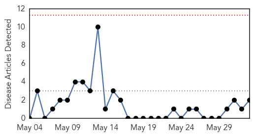
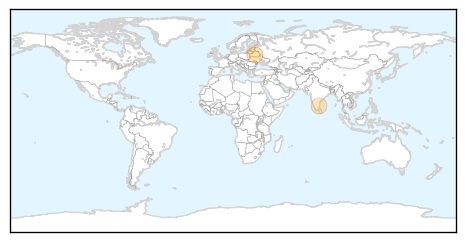

Swine Flu
30-Day Web Trend
0 alerts, 0 warnings

30-Day Twitter Trend
3 alerts, 0 warnings

Article Locations

Article Confidences

Top Articles:
Top Tweets:
-
No tweets found for Jun 02, 2015
Ebola
30-Day Web Trend
0 alerts, 3 warnings

30-Day Twitter Trend
Article Locations

Article Confidences
Top Articles:
- 0.999
- UN official says Ebola will end in Sierra Leone in weeks
- 0.999
- UN official says Ebola will end in Sierra Leone in weeks
- 0.998
- MERS Virus Strikes In South Korea Killed Two
- 0.996
- Sierra Leone: Outbreak Bulletin - Vol. 5 Issue 2, 31 May 2015
- 0.995
- Why isn’t Guinea-Bissau prepared for Ebola?
- 0.993
- Ban to convene international Ebola recovery conference in New York
- 0.993
- Mers outbreak: Chinese hospital staff 'hold ballot to decide who will treat patient with deadly disease'
- 0.990
- Nigerian vaccinologist makes presentation on experimental Ebola vaccine at scientific conference
- 0.990
- Mining Ebola tweets yields valuable outbreak information
- 0.988
- Liberia tackles measles as the Ebola epidemic comes to an end
- 0.988
- Ebola will return, scientist warns
- 0.987
- Lawmaker held over unsafe burial in Ebola-hit Sierra Leone
- 0.982
- Sierra Leone: Sierra Leone Ebola Situation Report, 27 May 2015
- 0.981
- Chief of UN Mission for Ebola Emergency Response calls for calm and for protection of national and international actors involved in fight against Ebola in Guinea - Guinea
- 0.981
- Chief of UN Mission for Ebola Emergency Response calls for calm and for protection of national and international actors involved in fight against Ebola in Guinea - Guinea
- 0.972
- What does it really mean to build health systems?
- 0.963
- Courageous work of CAFOD partners in Sierra Leone and Syria honoured with humanitarian awards
- 0.950
- Health workers get skills in reproductive health
- 0.948
- United Nations Secretary-General Ban Ki-moon's Statements
- 0.939
- Liberians Cautioned against Stigmatizing Ebola Survivors
- 0.919
- USA SUPPORT FOR THE SIERRA LEONE GOVERNMENT IS NOT TEMPORARY
- 0.908
- Two People Die in South Korea After Contracting MERS
- 0.841
- Sierra Leone Cuts Revenue Forecast as Ebola Limits Rebound
- 0.832
- Malnutrition in Guinea
- 0.828
- Ebola at Lungi Airports Environs Concern the NERC
- 0.827
- Researchers discover two new groups of viruses
- 0.762
- Researchers discover two new groups of viruses
- 0.740
- Sierra Leone lawmaker arrested for breaking Ebola emergency laws -
- 0.724
- West and Central Africa Region Weekly Humanitarian Snapshot (26 May – 1 June 2015) - Central African Republic
- 0.665
- Nonprofit Adds Traditional Healers to Health Team
- 0.651
- President Sirleaf Congratulates Italy
- 0.609
- Ebola threat isn't deterring retired teacher's school plan
- 0.525
- Reversing Africa's Medical Brain Drain
- 0.510
- S/Leone: Kenya Airways resumes Freetown flights
Top Tweets:
- 0.968
- Liberia tackles measles as the Ebola epidemic comes to an end - World Health Organization http://t.co/ooMWhb1xPl ebola EVD
- 0.955
- Ebola Update: 27055 confirmed probable & suspected cases reported in 3 most affected countries with 11142 deaths. EbolaResponse
- 0.919
- Twitter shared news of Ebola outbreak before health officials - Economic Times http://t.co/6LbhcQlkFF ebola EVD
- 0.881
- .@JeremyFarrar MERS vaccines/drugs further behind than Ebola's. If the virus starts to spread won't be any tools. Deja vu all over again.
- 0.800
- Is Lassa Fever The New Ebola? - Youth Health Magzine http://t.co/bEPe4uz7mn ebola EVD
- 0.765
- Sierra Leone News : Ebola at Lungi Airport's Environs Concern the NERC - Awareness Times http://t.co/rCQwBriCKh ebola EVD
- 0.764
- Ebola lessons guide International Health Regulations review - CMAJ http://t.co/VGbn94oEmd ebola EVD
- 0.764
- ECOWAS Diplomat Commends Liberians For Defeating Ebola > Weeks - Front Page Africa http://t.co/P4OV2Jc99x ebola EVD
- 0.751
- UN Official Says Ebola Will End in Sierra Leone in Weeks - ABC News http://t.co/NSH66OcOo0 ebola EVD
- 0.664
- UNMEER Head Peter Graaff to UNGA: "We have observed considerable progress in containing this Ebola outbreak." EbolaResponse
- 0.656
- ExxonMobil & NOCAL Gives $162K to Post-Ebola Efforts > Monro - Front Page Africa http://t.co/Dqke9PFK7n ebola EVD
- 0.615
- Lawmakers: End Ebola quarantine at Fort Monmouth - Asbury Park Press http://t.co/wu8tlswWqh ebola EVD
- 0.611
- Ebola threat isn't deterring retired teacher's school plan - Washington Times http://t.co/q5XkSPBY8v ebola EVD
- 0.588
- Amazing! Twitter spotted the Ebola outbreak 3 days before health authorities did. [TechRadar] http://t.co/fghsccQRKr
- 0.570
- How Nigeria beat the ebola virus in three months http://t.co/ngzIXo5fuK
- 0.551
- Nigerian scientist presents Ebola vaccine report in France - Premium Times http://t.co/ymuiHcEWQw ebola EVD
- 0.536
- Ban to convene international Ebola recovery conference in New York - UN News Centre http://t.co/n8ctoI4aiC ebola EVD
- 0.524
- Ebola threat to Guinea Bissau rises as border zone heats up - Reuters http://t.co/DuWPomfht1 ebola EVD
- 0.505
- Ebola threat to Guinea Bissau rises as border zone heats up - Yahoo News http://t.co/s8A7w9LUFc ebola EVD
- 0.503
- RT: @EbolaGC West African celebrities launch a SongContest in Guinea that aims to put an end to Ebola …